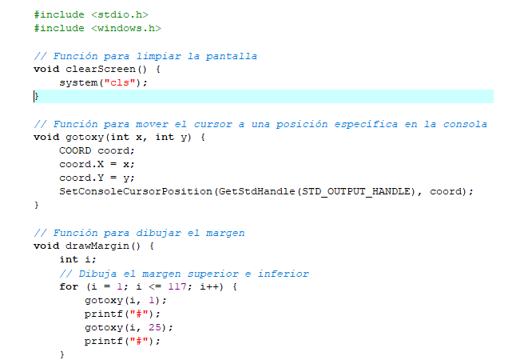
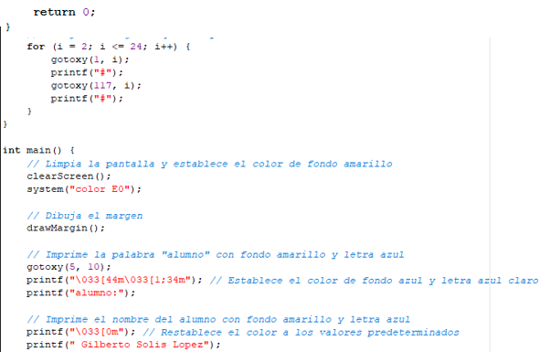
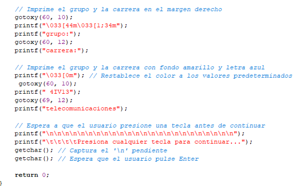
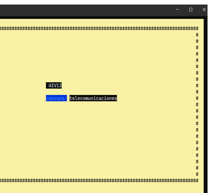

Proyecto en C: Aplicación de Consola
Portada
En este proyecto, desarrollaremos una aplicación de consola en C que utiliza estructuras, funciones y arreglos para realizar ciertas operaciones. La aplicación estará diseñada para interactuar con el usuario a través de la línea de comandos y llevar a cabo tareas específicas.
Teoría
Para este proyecto, utilizaremos tres conceptos principales: estructuras, funciones y arreglos.
Estructuras en C
Las estructuras en C nos permiten agrupar varios tipos de datos relacionados bajo un solo nombre. En nuestro proyecto, usaremos estructuras para representar entidades o datos complejos que necesitan ser manipulados de manera conjunta. Por ejemplo, podríamos usar una estructura para representar un libro, con miembros como título, autor y año de publicación.
Funciones en C
Las funciones en C nos permiten organizar y reutilizar nuestro código de manera eficiente. Usaremos funciones para realizar operaciones específicas en nuestra aplicación. Por ejemplo, podríamos tener una función para agregar un nuevo libro, otra función para mostrar todos los libros disponibles, etc.
Arreglos en C
Los arreglos en C nos permiten almacenar múltiples valores del mismo tipo en una sola variable. En nuestro proyecto, podríamos usar arreglos para almacenar una lista de libros o cualquier otro tipo de datos que necesitemos manejar en nuestra aplicación.
Conclusión
Al combinar estructuras, funciones y arreglos en nuestro proyecto de aplicación de consola en C, podemos crear un programa robusto y modular que puede realizar una variedad de tareas útiles para el usuario.
codigo
  Código Ejecutable
.
